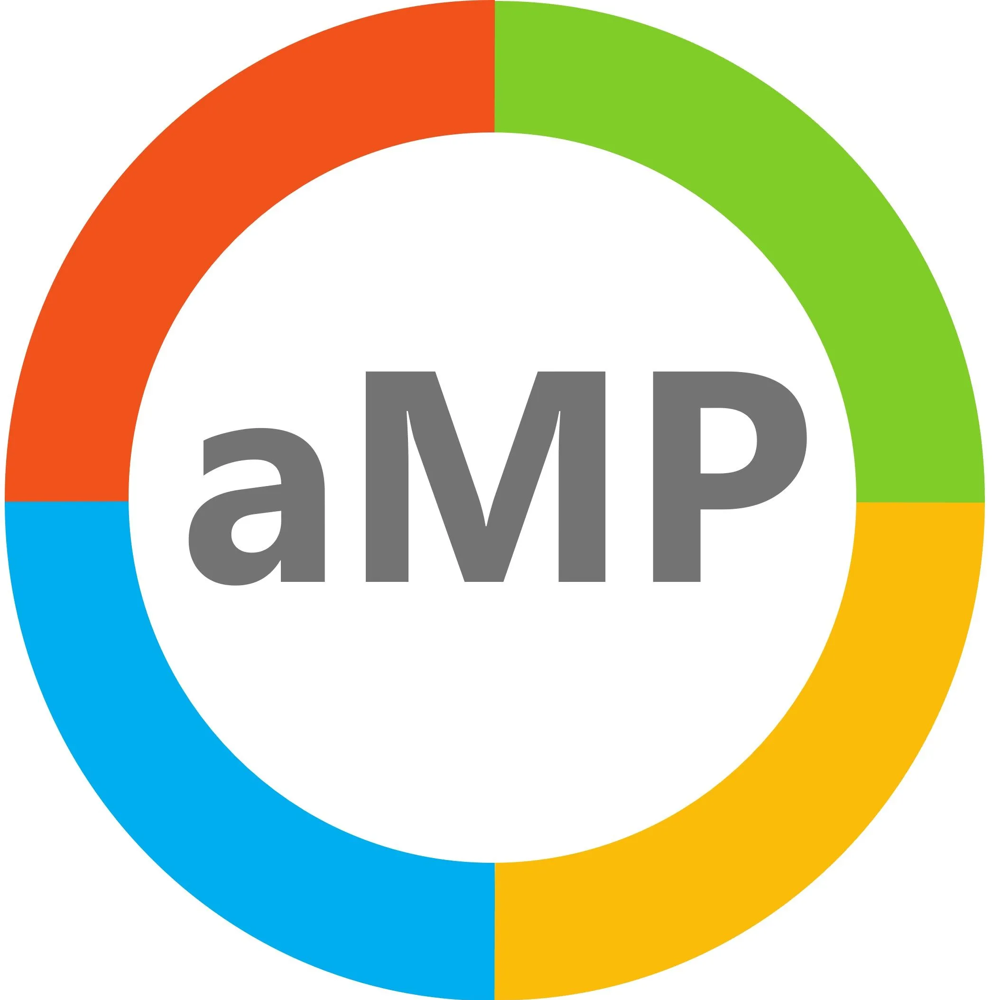

25 sessionsMardi 23 juin 2026
09:00→ 09:40
Accueil et café jour 140 min
09:40→ 10:00
Lancement de la MWCP20 min
10:00→ 11:00
Salle 1 · 35p60 min
Table ronde - Préparer son tenant à l'arrivée de Microsoft 365 Copilot
Sébastien Paulet +4
11:00→ 11:15
Pause Café15 min
11:15→ 12:00
Salle 1 · 35p45 min
UNI5 | Soldez votre dette technique avec l'IA : REX avec le DSI Fedd (Groupe AGON)
Imad Bensisaid, Sylvain Laquiche
Salle 2 · 19p45 min
REX – Agent aRHiane, la collègue IA de 1200 collaborateurs
Nada Brisville, Corentin Brabant
Salle 3 · 14p45 min
IA hybride en entreprise : orchestrer cloud et local pour maximiser les usages métier
Mohamed Ait Salah
Salle 4 · 14p45 min
Power BI à l’ère de l’IA : Copilot et Data Analysts AI-Ready
Jean-Pierre Riehl
Salle 5 · 14p45 min
Vos secrets sont partout — Microsoft Purview peut tous les trouver
Hicham Gondouin, Abdel Tarnagda
12:05→ 12:50
Salle 1 · 35p45 min
Quand les IA génératives deviennent une surface d'attaque
Jean-Philippe Lesage
Salle 2 · 19p45 min
L'ordinateur n'est plus un simple objet : bienvenue dans l'ère de Windows 365
Nicolas Bonnet
Salle 3 · 14p45 min
From Prompt to PC: How Agents Take Over the Keyboard
Alaa Bitar
Salle 4 · 14p45 min
Et si on notre agent obtiennait la capacité de faire le café ☕ ?
Adrien Clerbois
Salle 5 · 14p45 min
From Use Case to Business Case: Why 5,000 Copilot Licenses Are Not an AI Strategy
Marin Niehues
12:50→ 14:15
Pause Repas jour 185 min
14:15→ 15:00
Salle 1 · 35p45 min
AVEPOINT | DSI : Piloter, mesurer l'ère de l'IA pour éviter le chaos
Jeff Angama, Fleur Bidault
Salle 2 · 19p45 min
L’ère du “Copilot qui fait” : découvrir Cowork pour orchestrer du travail multi‑étapes
Antoine Galland, Clément Serafin
Salle 3 · 14p45 min
Ces choses dans Power BI peu ou mal utilisées!
Guillaume Gaudfroy
Salle 4 · 14p45 min
Choose your favorite (Information Protection) label
Vladimir Meloski, Gorana Konevska Jankoska
Salle 5 · 14p45 min
Développer sur Power Platform avec des Skills, des Agents et des MCP : le nouveau standard ?
Jeremy Veque, Franck Catinot
15:05→ 15:50
Salle 1 · 35p45 min
Comprendre le Cloud Souverain Microsoft : Public, Privé et National expliqués
Alexandre Piatetsky +2
Salle 2 · 19p45 min
Créer des Declarative Agents pour rendre Microsoft 365 Copilot spécialiste de votre métier
Benjamin Talmard, Alexis Conia
Salle 3 · 14p45 min
REX de nos bonnes pratiques pour gérer le cycle de vie de vos documents sur vos tenants M365
Amélie Plockyn, Bastien Guimonet
Salle 4 · 14p45 min
Power Pages : et si c'était le retour gagnant ?
Jeremy Laplaine, Gilles Pommier
Salle 5 · 14p45 min
BYOAI – Votre IA perso est-elle votre meilleur collègue… ou votre pire fuite ?
Louis Cacaret, Rali Hakam
15:50→ 16:10
Pause Café20 min
16:10→ 16:55
Salle 2 · 19p45 min
Carve-in/out Microsoft 365 : maîtriser la transition sans rupture pour vos métiers
Julien Besnard, Anne Coutant
Salle 3 · 14p45 min
REX Méthodologie & facteurs clés de réussite de la création d'agent avec Copilot Studio
David Vachala
Salle 4 · 14p45 min
Copilot l'IA qui rend idiot ?
Kevin Trelohan
Salle 5 · 14p45 min
From Single Agent to Agent Orchestrator: A Stage-Based Architecture with Azure AI Foundry
Mihail Mateev
Session ORANGE BUSINESS45 min
17:00→ 17:15
Clôture Jour 115 min

Événement par aMP Community · Données Sessionize